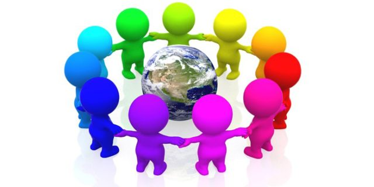

Citzenship can be defined as " Definition of citizenship 1 : the status of being a citizen He was granted U.S. citizenship.
2 a : membership in a community (such as a college)
b : the quality of an individual's response to membership in a community The students are learning the value of good citizenship."
source: https://www.merriam-webster.com/dictionary/citizenship  picture
Honesty can be defined as: fairness and straightforwardness of conduct. This is crucial to being a good citizen because those with no integrity are a harm to society
Compassion is : sympathetic consciousness of others' distress together with a desire to alleviate it. This is very important for citzen's because it is important for our society to care for each other
Respect: Respect: an act of giving particular attention. This is needed for citizenship becasue with out respect are society crumbles with no regard for the rules or authorities.
Responsibility: moral, legal, or mental accountability. This is huge because if people are not making responsible decisions, the consequnces fall on the rest of society.
Courage: mental or moral strength to venture, persevere, and withstand danger, fear, or difficulty. Courage is important because without people to venture off the beaten path and stand up to injustice our society would not progress
source for all defintions: Merriam-Webster
One more important characteristic is being patriotic. WIthout patriotism people who join our country should the love and respect for our country as much as their previous country.
Last year, our school rasied awareness and tolernece by creating a programm for one month to help rid the school of injustice. Project LS was a great movement for the community and for us "the citizens" of LS. This movement was great because LS banded together to fight ideals and morales that our school doesn't want, like hate and prejudice. My Contract